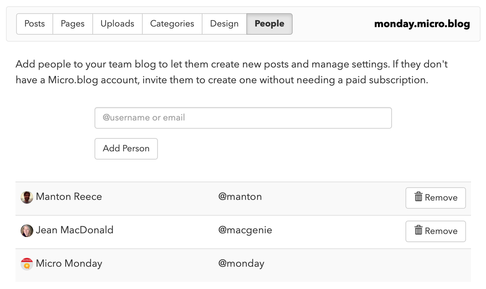

test hello again
Love it when Discover and the Photos timelines get updated. Always find someone I wasn’t yet aware of and worth a follow.
Currently reading: The Tombs of Atuan by Ursula K. Le Guin üìö

Test "with quotes"
testing testing testing testing testing testing testing testing testing testing testing testing testing testing testing testing testing testing testing testing testing testing testing testing testing testing testing testing testing testing testing testing testing testing testing testing testing testing testing testing testing testing testing testing testing testing testing testing testing testing
Test draft about Quotebacks
For a long time I’ve wanted to add quoting tools to Micro.blog, so that it’s even easier to embed text from other blog posts and add your own thoughts. As I blogged about back [in 2016 about fake news](), I don’t think retweets are helpful. Markdown block quotes are easy enough, but do require a little more copy/paste work and some editing.
So I was really interested in the recent launch of Quotebacks, from Tom Critchlow and Toby Shorin. We’ve needed a kind of “embed microblog post” feature in Micro.blog, similar to embedding features that Twitter and Facebook have. Quotebacks are exactly that, but they work for anything on the web.
I’d like to run with Quotebacks and see where it leads us. For now, I’ve added “Embed” links on the Micro.blog Favorites page on the web. This is an experiment. It will likely change, either rolling out in some form to all the platforms, or based on feedback maybe we’ll go in a different direction.
I’ve also [forked the Quotebacks repository]() and tweaked the JavaScript with a couple changes:
- Instead of routing the favicons through Google’s cache, Micro.blog’s version just uses the profile photos on your account directly with a new
data-avatarattribute. - Because copied microblog posts always have a profile photo, it is displayed larger with rounded corners.
How does this look? I’m embedding a microblog post below using this feature:
iA Writer has added Micropub support in today’s 5.5 update:
This means you can publish to Micro.blog and other IndieWeb tools.
Another test:
@chaitanya Thanks. @manton suggested I use this method put forward by @chet (which seems slightly easier!). I will see how it goes with the next podcast RSS refresh.
I’ve kept this isolated to the Favorites page so we can try a few things without disrupting the rest of your Micro.blog workflow. There are other questions to answer, such as how this should integrate with sending Webmentions, but I think having something like this to play with is a good first step.
Another test.
Finished reading: Pocket Atlas of Remote Islands by Judith Schalansky üìö
Testing.
Someone’s been trying to reset my Apple ID password all week. Started to get worried when I got an email that they called Apple Support, so I called too. Everything seems okay. I have 2-step verification on.


{kind=link}
{kind=link}
{kind=link}
{kind=link}
{kind=link}
Daniel and I talk about iA Writer adding Micro.blog publishing and more on the latest Core Intuition.
Categories from hashtags
Categories in Micro.blog are a great way to organize your posts. When you use categories, visitors to your blog can browse just those posts, and you can also provide RSS feeds for specific categories.
Some apps such as iA Writer use hashtags to organize posts. When you publish to Micro.blog, those tags will be included in the blog post content. You can use Micro.blog filters to automatically assign categories based on those tags.
Here’s what a post might look like in iA Writer, using the hashtag #travel:
In Micro.blog, click Posts → Categories → Edit Filters to create a new filter. For the text content, enter #travel and pick a category to assign:
Note that the hashtag will still appear in your blog post, although you can edit it out later if you want to.
Teams
Micro.blog supports multi-user blogs, so your whole team can write posts on a shared blog. It’s great for small companies, families, and schools, with everything from shared photo blogs to podcasts.
To upgrade a blog, click on “Plans” and choose “Upgrade to Teams”.
When you upgrade a blog to the teams subscription, a new “People” tab will appear in Micro.blog. Here you can give existing Micro.blog accounts access to post to the blog, or you can invite new people. Team members can publish new posts, edit existing posts, upload files, manage categories, and more.

When someone is added to a team blog, that blog shows up as an additional blog on the web or in the native iOS and macOS apps. A single Micro.blog account can have access to any number of blogs and podcasts.
To change which blog you are posting to:
- In Micro.blog for the web, click New Post → Switch Site.
- In Micro.blog for iOS and macOS, click on the hostname at the bottom of the new post screen.
The teams plan is a $20/month subscription with unlimited users. It also includes podcasting and video hosting. If you invite someone who doesn’t already have a Micro.blog account, Micro.blog will give them immediate access to the team blog without prompting them to create their own microblog or sign up for a paid subscription.
Theme parameters
The Marfa design has a place in the footer of each post that shows the author of that post. Other custom themes may need modifications if you want to include author information.
Micro.blog adds the following Hugo parameters when processing your blog:
.Params.author.name.Params.author.username.Params.author.avatar
If the blog is not a team blog, these parameters will be blank. You can check whether the author is available, and then fall back on the blog’s default author:
{% raw %}{{ if .Params.author }}
<p>{{ .Params.author.name }}</p>
{{ else }}
<p>{{ .Site.Author.name }}</p>
{{ end }}{% endraw %}
For more about custom themes, see this help page.
Test link. manton.org
Redirects
Micro.blog can redirect some common URLs for you, and has the option to create additional redirects using pages. Micro.blog will automatically handle the following redirects:
- To help migrate from another blog, Micro.blog will redirect any missing file ending in
.xmlto your default feed. It will also redirect WordPress-style feed URLs such as/feed. - When importing from WordPress, Tumblr, or Ghost, Micro.blog will keep track of the original URLs used. Micro.blog will automatically redirect these URLs to the new URLs on Micro.blog. (Your custom domain name must be the same for this to work.)
If you need to add more redirects, you can create a new page on your site: Posts → Pages → New Page. In the text contents, enter the full URL to redirect to:
After creating the page, you can edit it to change the path for the URL from the default. Click on the page and look for the “Edit” button in the corner:

Profile photos with multiple blogs
It’s possible on Micro.blog to have multiple blogs or podcasts for a single Micro.blog account. When managing multiple blogs, you may want to override the image so that it’s different than your profile photo.
Changing the header
To change the home page to use a new image instead of your profile photo, you’ll need to create a custom theme to override the header on your site:
- Upload a new photo under Posts → Uploads. Copy the URL for the uploaded file.
- Click on Posts → Design and then Edit Custom Themes.
- Create a new theme. You can name it whatever you want.
- Click on the theme to edit it and look for the template
layouts/partials/profile.html. - In that template, replace “{{ .Site.Author.avatar }}” with the URL for the image you uploaded in the Uploads tab.
- After saving it, make sure to go back to Posts → Design and select the custom theme to use for your site.
Podcast cover art
To customize the podcast cover art, upload a new PNG in Micro.blog on the web under Posts → Uploads. The dimensions should be 1400x1400 because that’s what Apple’s podcast directory prefers. Then click on Posts → Design and click the small preview of your current profile photo to pick the cover art for your podcast.
iOS home screen icon
Micro.blog-hosted blogs have a basic “favicon” based on your profile photo. This should appear in web browsers and feed readers. When adding a blog as an icon on the iOS home screen, though, a custom image needs to be provided to iOS.
- Upload a PNG of the right dimensions under Posts → Uploads. Copy the URL for the uploaded file.
- Create a new custom theme on Micro.blog (or use your current custom theme if you already have one). Custom themes are managed under Posts → Design → Edit Custom Themes.
- Search for the template
layouts/partials/head.htmland click on it to edit it. - Add the HTML to reference your uploaded PNG file. It should be something like:
<link rel="apple-touch-icon" href="url-here" />
After saving the template, make sure the custom theme is set for your blog.
Testing XML-RPC history
Micro.blog supports primarily 2 APIs for posting to hosted blogs:
- Micropub, the IndieWeb API used in the official Micro.blog apps.
- MetaWeblog, the XML-RPC API used in MarsEdit for macOS.
XML-RPC used to be the standard for blog posting, widely supported in all blogging platforms. It is still used in WordPress today, and I’ve supported it in Micro.blog from the beginning. I’ve always wanted Micro.blog to be compatible with as many apps as possible, especially MarsEdit.
To understand XML-RPC, we have to go way back in blogging history, to 2001 and the original Blogger API by Evan Williams. Micro.blog’s support for XML-RPC still closely matches what the API looked like nearly 20 years ago.
As is obvious from the name, requests and responses in XML-RPC are sent as XML. Common data types such as integers, strings, and structs are encoded with rules outlined in the XML-RPC specification. To create a new post in the original Blogger API with the words “Hello world”, the request to the method blogger.newPost might look like this:
<?xml version="1.0"?>
<methodCall>
<methodName>blogger.newPost</methodName>
<params>
<param>
<value><int>app ID</int></value>
</param>
<param>
<value><int>blog ID</int></value>
</param>
<param>
<value><string>manton</string></value>
</param>
<param>
<value><string>mypassword</string></value>
</param>
<param>
<value><string>Hello world.</string></value>
</param>
<param>
<value><boolean>1</boolean></value>
</param>
</params>
</methodCall>
Subsequent blogging platforms extended the Blogger API with their own features. Instead of blogger.newPost, Movable Type had mt.newPost with similar parameters, adding a title field. WordPress had wordpress.newPost.
To try to unify future improvements under a vendor-neutral standard, Dave Winer proposed the MetaWeblog API. MetaWeblog switched to passing content as structs, which could more easily be extended with additional fields, and added an image upload API, metaWeblog.newMediaObject. Dave patterned the field names after RSS:
The MetaWeblog API uses an XML-RPC struct to represent a weblog post. Rather than invent a new vocabulary for the metadata of a weblog post, we use the vocabulary for an item in RSS 2.0. So you can refer to a post’s title, link and description; or its author, comments, enclosure, guid, etc using the already-familiar names given to those elements in RSS 2.0.
Dave wasn’t the only one who hoped to bring consistency between feed formats and a blogging API. A couple years later, AtomPub was created based on Atom feeds.
Ben Trott of Six Apart, makers of Movable Type, blogged at the time about the benefits to basing an API on the Atom feed format, which back then was called Echo:
Benefits to developers: using the same data model and serialization for syndication, archiving, and editing simplifies the development of tools to work with (produce and consume) these formats, for obvious reasons: code written to produce an item in an Echo feed, for example, can also be used for producing data sent in an API request or packaged up for archiving.
AtomPub was adopted in Blogger but is not supported in any other modern blogging platforms. Earlier this year, MarsEdit developer Daniel Jalkut announced that he would also be phasing out support for posting to Blogger.
Between the early 2000s when there was so much activity around blogging standards, and the growth of the IndieWeb and W3C-recommended standard Micropub API in 2017, there was a notable lack of innovation in blogging. Everyone was pulled away to social networks. Platform-specific APIs became the norm. It is because if this lull that XML-RPC survived so long without a modern replacement.
So that brings us to today. Micro.blog has always worked with MarsEdit, but because it’s based on a standard that was frozen, MarsEdit could not support all of Micro.blog’s features. And while Micropub is clearly the future, there is more we could do now without requiring MarsEdit to be adapted for Micropub.
I’ve been working with Daniel to identity what is missing from MetaWeblog and rolling that into a new Micro.blog-specific flavor of XML-RPC. This is essentially what Movable Type and WordPress had done years ago. I had avoided it until now because Micro.blog should default to supporting standards wherever possible before inventing something new.
We talked through this on Core Intuition 416. Now that there’s an alpha of MarsEdit 4.4 available, I’ve documented the new API parameters here. It is based on MetaWeblog, but cleaned up with more consistent field names and support for new features such as creating and editing pages on your blog, server drafts, and downloading all posts.
Micro.blog now shows up in MarsEdit as one of the supported blog systems, along with Tumblr and WordPress:

I’ve been using the new MarsEdit for the last few days, and it really is a big improvement for Micro.blog. Keep an eye out for the final release.
Micro.blog XML-RPC API
This page documents the parameters and responses for Micro.blog’s XML-RPC API. It is very similar to the MetaWeblog API, but updated for Micro.blog to support features such as pages and downloading all posts.
Discovery
The XML-RPC endpoint for Micro.blog is: https://micro.blog/xmlrpc
To discover the XML-RPC settings, you can prompt the user to enter their blog URL: my-username.micro.blog or a custom domain name. Look in the HTML response for a <link> tag with “EditURI”:
<link rel="EditURI" type="application/rsd+xml" href="https://my-username.micro.blog/rsd.xml" />
Download this RSD file, which contains not just the endpoint URL but also a blogID attribute that you can pass with some XML-RPC requests. This tells Micro.blog which blog to post to when the user has multiple blogs.
<rsd xmlns="http://archipelago.phrasewise.com/rsd" version="1.0">
<service>
<engineName>Micro.blog</engineName>
<engineLink>https://micro.blog/</engineLink>
<homePageLink>https://micro.blog/</homePageLink>
<apis>
<api name="Micro.blog" blogID="10" preferred="true" apiLink="https://micro.blog/xmlrpc"/>
<api name="MetaWeblog" blogID="10" preferred="false" apiLink="https://micro.blog/xmlrpc"/>
</apis>
</service>
</rsd>
Example XML
Micro.blog’s XML-RPC API uses method names such as microblog.newPost and micoblog.getPost. Here’s an example of what a request might look like to download the 20 most recent posts on a blog. The blog ID should be from the RSD step. The last parameter is an offset to start at, so that you can page through the posts with multiple requests.
<?xml version="1.0"?>
<methodCall>
<methodName>microblog.getPosts</methodName>
<params>
<param>
<value><int>blog ID</int></value>
</param>
<param>
<value><string>manton</string></value>
</param>
<param>
<value><string>mypassword</string></value>
</param>
<param>
<value><int>20</int></value>
</param>
<param>
<value><int>0</int></value>
</param>
</params>
</methodCall>
The rest of this help page outlines the method call names and their parameters.
microblog.newPost
- params:
- 0: blog ID
- 1: username
- 2: password
- 3: content struct
titledescriptiondate_createdcategoriespost_status(“draft” or “published”)
microblog.editPost
- params:
- 0: post ID
- 1: username
- 2: password
- 3: content struct
titledescriptiondate_createdcategoriespost_status(“draft” or “published”)
microblog.getPost
- params:
- 0: post ID
- 1: username
- 2: password
- response fields in struct:
iddate_createddate_modifiedpermalinktitledescriptioncategoriespost_statusauthornameusername
microblog.deletePost
- params:
- 0: post ID
- 1: username
- 2: password
microblog.getCategories
- params:
- 0: blog ID
- 1: username
- 2: password
- response fields in struct:
idname
microblog.newMediaObject
- identical to
metaWeblog.newMediaObject
microblog.getPosts
- similar to
metaWeblog.recentPostsbut with offset parameter for paging, more consistent field names - params:
- 0: blog ID
- 1: username
- 2: password
- 3: number of posts
- 4: offset
- response fields in struct:
iddate_createddate_modifiedpermalinktitledescriptioncategoriespost_statusauthornameusername
microblog.getPages
- similar to
getPostsbut for pages - response struct also includes extra booleans:
- is a page included in the site’s navigation bar?
- is a page a “template” where the description is generated dynamically? (e.g. About, Archive, Photos, and Replies)
- is a page actually redirecting to another URL? (description will be just that URL)
- params:
- 0: blog ID
- 1: username
- 2: password
- 3: number of pages
- 4: offset
- response fields in struct:
iddate_createddate_modifiedpermalinktitledescriptionis_navigationis_templateis_redirectauthornameusername
microblog.newPage
- params:
- 0: blog ID
- 1: username
- 2: password
- 3: content struct
titledescriptiondate_createdis_navigation
microblog.getPage
- params:
- 0: page ID
- 1: username
- 2: password
- response fields in struct:
iddate_createddate_modifiedpermalinktitledescriptionis_navigationis_templateis_redirectauthornameusername
microblog.editPage
- params:
- 0: page ID
- 1: username
- 2: password
- 3: content struct
titledescriptiondate_createdis_navigation
microblog.deletePage
- params:
- 0: page ID
- 1: username
- 2: password
Overview of XML-RPC API
The XML-RPC support (MetaWeblog API and Micro.blog XML-RPC API) allows you to post to a Micro.blog-hosted microblog and from the iOS app to WordPress, Movable Type, and other compatible blogging platforms:
- For posting from a third-party client like MarsEdit on your Mac to Micro.blog-hosted microblogs, generate an app token under Account → “App tokens”. When prompted for a username in your third-party client, enter your Micro.blog username and the app token for the password.
- For posting from the Micro.blog iOS app to WordPress and compatible weblogs, Micro.blog will look for your XML-RPC endpoint and prompt for your blog’s username and password.
On the server, Micro.blog responds to the following XML-RPC methods:
metaWeblog.newPostmetaWeblog.editPostmetaWeblog.deletePostmetaWeblog.getPostmetaWeblog.getRecentPostsmetaWeblog.newMediaObject
And Micro.blog-specific updates to the MetaWeblog API, which are documented in full on this page:
microblog.newPostmicroblog.editPostmicroblog.getPostmicroblog.deletePostmicroblog.getCategoriesmicroblog.newMediaObjectmicroblog.getPostsmicroblog.getPagesmicroblog.newPagemicroblog.editPagemicroblog.deletePage
From the iOS client, Micro.blog calls the following XML-RPC methods:
blogger.getUserInfoblogger.newPostwp.newPostwp.getTermsmetaWeblog.newMediaObject
{kind=link}
{kind=link}
Seeing this made me smile while out walking in the neighborhood this week. These kids have the right idea.
Test.
Test Episode
Testing podcast. Testing podcast. Testing podcast. Testing podcast. Testing podcast. Testing podcast. Testing podcast. Testing podcast. Testing podcast. Testing podcast. Testing podcast. Testing podcast. Testing podcast. Testing podcast. Testing podcast. Testing podcast. Testing podcast. Testing podcast.
Test tweet
Testing. Testing. Testing. Testing. Testing. Testing. Testing. Testing. Testing. Testing. Testing. Testing. Testing. Testing. Testing. Testing. Testing. Testing. Testing. Testing. Testing. Testing. Testing. Testing. Testing. Testing. Testing. Testing.
Remember how there were (supposedly) so many pregnancies that happened during the New York Blackout?
— Merlin Mann (@hotdogsladies) March 14, 2020
I hope we get that but for really good new podcasts.
Go! Inseminate!
Amuse me, you magnificent bastards!
Testing.
Testing script
Testing.
Behind the scenes, this checkbox is adding a new Hugo parameter .Params.include_conversation that can be used in a custom theme. All the built-in Micro.blog designs have been updated to check for this parameter and then add the following line of JavaScript:
<script type="text/javascript" src="https://micro.blog/conversation.js?url={{ .Permalink }}"></script>
That’s it.
I didn’t realize until I just got a mention that push notifications work in Icro for Mac! I should probably know that considering that Micro.blog is the one sending notifications for third-party developers. Nice surprise to see it in action.
Micro.blog 1.7.2 for iOS is now available in the App Store. Just a few more bug fixes and minor improvements.
IndieWeb Meetup this week in Austin! Wednesday at Mozart’s Coffee, 6:30pm. Stop by to chat about the open web and the upcoming IndieWebCamp. ☕